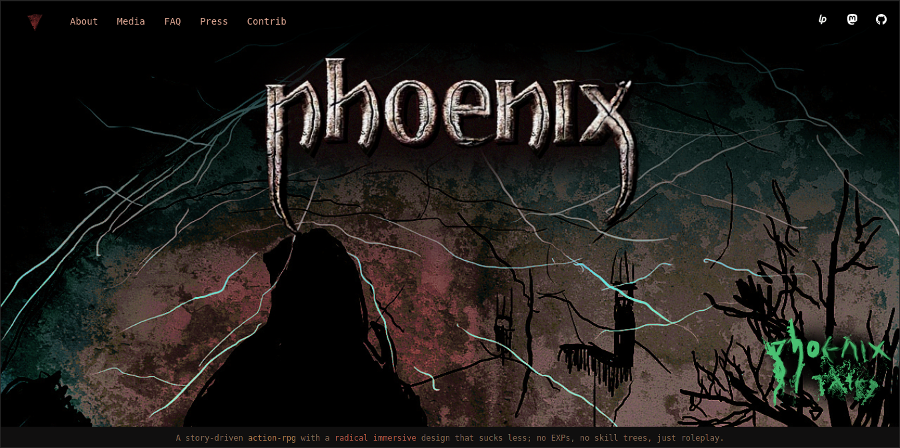
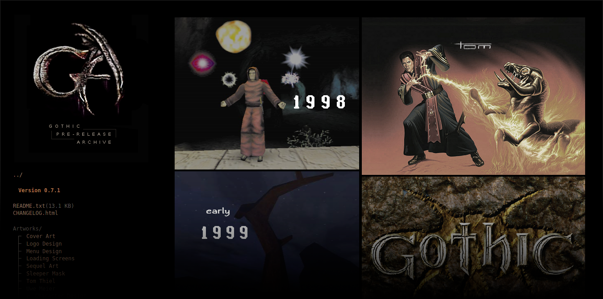
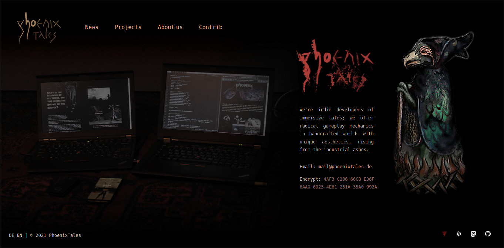
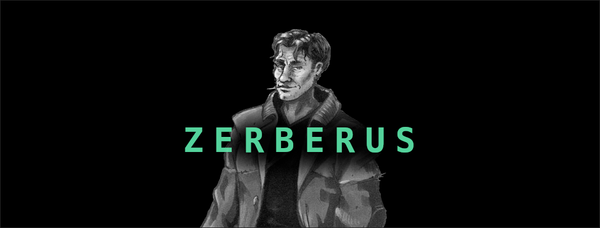
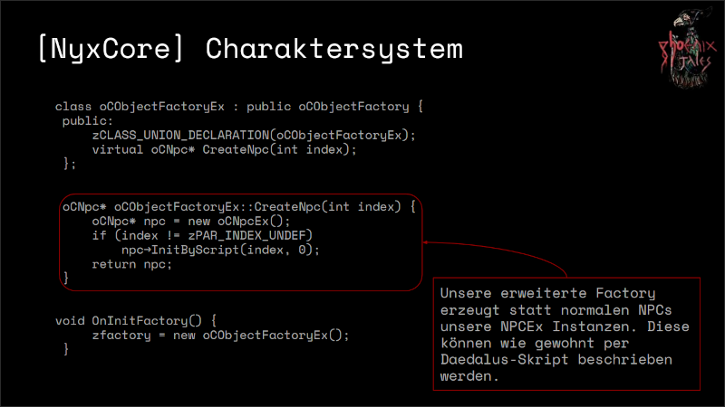

24.12.20 | Florian: And anther announcement to make. I've made a new website and we have a new domain for it: phoenixthegame.com. There you can find everything about PHOENIX (so far known under its working title Project Nyx). New infos included. Merry Christmas.
24.12.20 | Florian: We have a gift for you. Today we release v0.7.1 of our Gothic Archive. Some highlights: All Screenshots ordered by location, exclusive Pre-Alpha Music, the first Gothic ('Phoenix') Pitch, a PressKit never seen before and a lot of minor fixes, mobile optimization and little improvements; all to be found in our changelog.
23.12.20 | Florian: I've changed the design of our website and rewrote its code. Simple mobile optimization included, but still in pure Html+CSS (free from Javascript).
29.07.20 | Florian: Martin Dietrich was so kind to send me his record of the interview we gave him in May this year (for his GOTHIC report). I've transcribed it and I'm happy to present the edited transcript here (german only):
29.07.20 | Florian: I've made a little subpage for Zerberus and the Sci-Fi Shooter PB was working on after Gothic; contact us if you have anything to add here:
11.07.20 | Oliver: Here you can have a look at the Slides presented by me at today's meetup of the Gothic modding community 'Moddertreffen 2020':
09.04.20 | Florian: I've created a little mood teaser: Gothic Meets Acrobatics.

21.03.20 | Florian: We can finally declare the release of the first, official version (0.5) of the GOTHIC ARCHIVE. An urgently needed and comprehensive work of historical value, as we think. Thank you to all contributors. Readme.